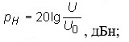

1. СПОСОБЫ ОРГАНИЗАЦИИ ПРОВОДНОЙ СВЯЗИ.
Многоканальные системы передачи представляют собой большие и сложные технические системы, которые воплощают в себе самые современные знания и технологии, полученные в разных областях науки и техники. Чтобы дать компактное и в то же время исчерпывающее описание этих систем, нужно использовать общепринятые (желательно согласованные на международном уровне) термины и определения различных объектов, процессов и устройств, относящихся к этой области.
Информацией называют совокупность сведений, данных о каких-либо событиях, явлениях или предметах окружающего нас мира. Для передачи или хранения информации используют различные знаки (символы), которые являются своеобразной формой представления информации. Такими знаками могут быть слова и фразы человеческой речи на том или ином языке, буквы и слова письменной речи, жесты и рисунки, математические и нотные знаки и т.п. Совокупность знаков, отображающих ту или иную информацию, называют сообщением.
Сообщение может иметь электрическую или неэлектрическую природу. В большинстве случаев интерес представляют сообщения неэлектрической природы. Источник и получатель сообщений разделены некоторой средой, в которой источник образует возмущения. Именно эти возмущения отображают сообщения и воспринимаются получателем. Например, при разговоре источником сообщений является голосовой аппарат человека, в качестве сообщения выступает изменяющееся в пространстве и во времени воздушное давление – акустические волны, а получателем служит человеческое ухо.
Процесс передачи (транспортирования) сообщения от источника к получателю в соответствии с принятыми правилами называют связью. При этом используют какой-либо материальный носитель сообщения (бумагу, магнитную ленту и т.д.) и/или физический процесс, отображающий (несущий) передаваемое сообщение. Последний называют сигналом. Тип сигнала определяется характером физического процесса передачи информации. Сигнал называют электрическим, если физический процесс представляет собой передачу электрического тока (напряжения), звуковым – если используется передача акустических колебаний и т.д.
Совокупность средств, обеспечивающих передачу сообщений от источника к получателю, образует канал связи.
Проводная связь – это связь, организуемая по линиям электропроводной связи (кабельным, волоконно-оптическим, воздушным).
Проводная связь по сравнению с другими средствами характеризуется:
- относительно большей скрытностью;
- более высоким качеством каналов и многоканальностью;
- более высоким качеством каналов и многоканальностью;
Средства проводной связи почти не подвержены воздействиям электронных средств противника (рисунок 1.1).
Рисунок 1.1 – Схема построения линии проводной связи
Однако проводная связь не лишена недостатков и проблем. Одной из основных является проблема и сложность строительства линий проводной связи.
Средства проводной связи (оконечная аппаратура) являются универсальными и могут быть использованы для работы как на линиях электропроводной связи, так и на линиях радиорелейной и тропосферной связи.
В настоящее время по унифицированным каналам многоканальных систем связи осуществляется передача всех видов связи:
- телефонной;
- телеграфной;
- передачи данных;
- фототелеграфной;
- радиовещания;
- телевидения.
Основным каналом в технике многоканальной связи является канал тональной частоты (ТЧ).
Каналом тональной частоты называется совокупность технических средств, обеспечивающих передачу сигналов электросвязи в эффективно передаваемой полосе частот 300…3400 Гц.
Канал ТЧ может быть использован:
- для обеспечения открытой телефонной связи;
- для обеспечения закрытой телефонной связи;
- для включения в канал ТЧ аппаратуры тонального телеграфирования в целях получения телеграфных каналов.
Заметим, что на сетях связи сохранились еще старые системы, каналы ТЧ которых имеют более узкую эффективную полосу 0,3…2,7 кГц.
Оборудование каналов ТЧ состоит из каналообразующей аппаратуры (КОА), размещенной на оконечных (промежуточных) станциях, а также соответствующих линий (кабельных, радиорелейных, тропосферных или космических). На линиях проводной связи участки линий (кабельные и воздушные) имеют усилительные пункты. В целом все это образует линейный тракт.
Линейным трактом системы с частотным разделением каналов называется совокупность технических средств, обеспечивающих передачу сигналов электросвязи в пределах одной системы передачи в полосе частот, определяемой номинальным числом каналов ТЧ данной системы.
Системы передачи предназначены для получения определенного числа каналов на заданную дальность связи. В целях эффективного использования линейных трактов применяется принцип уплотнения, обеспечивающий получение достаточно большого числа каналов.
По принципу построения линейного тракта многоканальные системы передачи (МСП) подразделяются на двухпроводные и четырехпроводные (двухпроводные работают по двухпроводным линиям связи, четырехпроводные на передачу используют одну пару кабеля связи, на прием – вторую пару. Двухпроводные системы работают, как правило, по воздушным линиям связи (рисунок 1.2), четырехпроводные – по кабельным (рисунок 1.3)):
Рисунок 1.2 – Схема воздушной линии связи
Рисунок 1.3 – Схема кабельной линии связи
- в двухпроводных системах для передачи в различных направлениях используются различные полосы частот, разделяемые в линейном тракте электрическими фильтрами. Такие системы бывают, как правило, двухполосными в целях защиты тракта передачи от сигналов тракта приема. Двухполосные системы передачи – это системы с ЧРК, у которых для передачи каналов электросвязи в противоположных направлениях используются две перекрывающие полосы частот;
- в четырехпроводных системах передача и прием сигналов осуществляется по различным цепям. Такие системы бывают, как правило, однополосными. Однополосные системы передачи – это системы с ЧРК, в которых для передачи сигналов электросвязи в противоположных направлениях используется одна и та же полоса частот.
По принципу разделения каналов системы передач подразделяются на следующие группы:
- системы передач с ЧРК (частотное разделение каналов);
- системы передач с ВРК (временное разделение каналов).
В системах передач с ЧРК каждому каналу отводится своя определенная полоса частот. В системах с ВРК каждый сигнал занимает в общем временном диапазоне определенный временный интервал
По числу организуемых каналов МС бывают:
- малоканальные (с числом каналов до шести);
- многоканальные (с числом каналов более шести).
По структуре построения каналообразующей аппаратуры МС подразделяются на следующие виды:
- системы построения по индивидуальному принципу;
- системы построения по групповому принципу.
В первом случае для формирования сигналов одного канала используется свое индивидуальное оборудование. На какое число каналов рассчитана КОА, такое количество индивидуальных трактов передачи и приема необходимо иметь в составе КОА.
Во втором случае часть оборудования индивидуально в каждом канале, а часть является общим (групповым) используемым для формирования сигналов групп каналов. По такому принципу построена практически вся многоканальная аппаратура с ЧРК.
Современная многоканальная КОА ЧРК строится по принципу многократного преобразования групп канальных сигналов с постепенным наращиванием числа каналов. Одним из достоинств такого построения является возможность широкой унификации основного оборудования, к которому относятся такие элементы, как преобразователи частоты, фильтры, генераторы несущих частот и др.
При организации связи радиорелейными, тропосферными, космическими или проводными средствами, передача информации обеспечивается по каналам связи, образованными данными средствами.
Канал связи – совокупность линейных и станционных устройств, обеспечивающих при включении оконечных аппаратов связь данного вида между абонентами различных пунктов.
Понятие канала связи связано с понятием канала передачи.
Канал передачи – совокупность средств связи и средств распространения, обеспечивающих передачу сигналов электросвязи между узлами связи в определенной полосе частот или с определенной скоростью передачи.
Проводная связь организуется 2 способами:
- по направлению связь от пункта управления или между двумя взаимодействующими подразделениями осуществляется по проводной линии, проложенной между ними. Этот вид связи целесообразно применять в обороне и в исходном районе.

- по оси связь от пункта управления с несколькими пунктами управления или между несколькими взаимодействующими подразделениями осуществляется по одной проводной линии. Этот вид связи организуется в наступательном бою при небольших темпах продвижения войск, когда нет времени для организации проводной связи по направлениям. Бесперебойность действия проводной связи достигается устройством соединительных линий между узлами связи пунктов управления мотострелковых (танковых) подразделений и узлами связи артиллерии и других войск, а также при прокладке линий связи в траншеях, ходах сообщения или при их заглублении в грунт на глубину 15—20 см. Следует учитывать также и защитные свойства местности.

1. ПОРЯДОК ОЦЕНКИ КАЧЕСТВА КАНАЛОВ СВЯЗИ (ЦИФРОВЫХ ПОТОКОВ).
Коэффициент битовых ошибок BER является ключевым параметром оценки качества цифровых систем передачи (ЦСП). Этот параметр незаменим при проверке цифровой аппаратуры (например, регенераторов) на этапе ее разработки и ремонта, когда оборудование выведено из эксплуатации. А что же делать, когда цифровые каналы и тракты требуется протестировать в процессе их нормальной эксплуатации?
У параметра BER есть и другой существенный недостаток: этот показатель практически невозможно использовать для оценки качества цифровой линии. При заказе любой услуги связи пользователь и провайдер должны заключить соглашение о качестве обслуживания (Service Level Agreement, SLA), где четко оговариваются двусторонние обязательства. Для оценки качества сеанса связи в цифровом канале или тракте логично использовать относительное число ошибок передачи за фиксированные интервалы времени — за секунду или за период передачи фиксированной группы битов, которую называют блоком.
Именно эти показатели положены в основу двух базовых рекомендаций ITU-T — G.821 и G.826, о которых мы и поговорим ниже. В этом году исполнилось четверть века с момента принятия рекомендации G.821 «Параметры ошибок международного цифрового соединения сети ISDN на скорости ниже первичной».
Первой сетью, где соединение между двумя пользователями было полностью цифровым, была сеть ISDN. Первичными скоростями ISDN являются скорости сигналов Т-1 и Е-1, равные 1544 и 2048 Кбит/c, соответственно. Ниже первичной стандартом предусматриваются скорости 64xN, где 64 Кбит/c представляет собой пропускную способность основного (или базового) цифрового канала (ОЦК), а N < 24 в случае Т-1 и N < 31 в случае Е-1.
В рекомендации G.821 в качестве параметра ошибок цифрового соединения выбраны два следующих.
1. Число секунд с ошибками (Errored Second, ES), к которым относится каждая секунда, в которой имеется по крайней мере одна ошибка. Как следует из определения, при таком подходе одиночная ошибка и пакет ошибок не различаются.
2. Число секунд с многочисленными ошибками (Severely Errored Second, SES), где SES означает секунду с коэффициентом ошибок ≥ 10-3.
Поскольку оба параметра — и ES, и SES — зависят от времени измерения T, для практической оценки качества цифрового соединения применяют их относительные значения: Errored Second Ratio ESR =ES/T и Severely Errored Second Ratio SESR = SES/T.
Заметим, что наличие двух параметров оценки ошибок позволяет не только более точно определить качество цифрового соединения, но и во многих случаях оказывается полезным при локализации возможных повреждений.
По мере распространения широкополосных услуг связи рамки использования рекомендации G. 821 становились все более узкими. Попытки же приспособить ее для измерения широкополосных цифровых трактов оказались неудачными. Кроме того, определение параметров качества в G.821 основывается на оценке битовых ошибок, а те, в свою очередь, могут быть точно определены лишь тогда, когда достоверно известна измеряемая цифровая последовательность. Поэтому тестирование в соответствии с G.821 возможно только при выводе цифрового соединения из эксплуатации.
Таким образом, специалисты нуждались в новой рекомендации, где учитывались бы реалии цифровых сетей связи, включая потребность тестирования канала связи в рабочем режиме, в том числе и в цифровых соединениях с применением оборудования синхронной цифровой иерархии SDH и асинхронной передачи АТМ.
Всем этим требованиям отвечает рекомендация G.826 «Параметры и нормы ошибок международных цифровых соединений на скорости выше первичной», одобренная ITU-T в 1993 г. Она обеспечила решение трех главных задач по организации тестирования ошибок цифровых соединений:
- во время нормальной эксплуатации;
- на скоростях 1544 Кбит/c, 2048 Кбит/c и выше;
- в сетях с использованием технологий SDH и АТМ.
Первая задача была решена путем перехода от тестирования ошибок по битам к тестированию ошибок по блокам. Напомним, блок представляет собой группу последовательных битов, которые относятся к исследуемому цифровому тракту. Каждый бит принадлежит к определенному блоку. Контроль блоков выполняется с помощью встроенных в системы передачи специальных устройств, применение которых гарантирует обнаружение ошибки с надежностью не ниже 90%.
Ошибки цифрового сигнала могут быть обнаружены множеством способов без перерыва связи. О недостатках двух из них — методах обнаружения ошибок кода передачи и циклового синхросигнала в цикле сигнала E-1. Их ограничения состоят, прежде всего, в частном характере и недостаточной точности. Между тем важнейшими требованиями к методам обнаружения ошибок цифрового сигнала являются универсальность, экономичность и точность. Универсальность означает применимость метода к любому цифровому сигналу, экономичность — эффективное использование дополнительной пропускной способности, ключевое же требование — несомненно, высокая точность.
Среди множества известных способов блочного контроля ошибок трем указанным требованиям наиболее полно удовлетворяет метод циклического контроля по избыточности (Cyclic Redundancy Code, CRC).
Метод CRC основан на делении и умножении многочленов. При этом делимый многочлен представляет собой последовательную запись блока данных в двоичной форме. Например, в системе Е-1 блок данных, для которого рассчитывается CRC, состоит из 256 байт. Поэтому делимое записывается как двоичное число длиной 2048 бит, которое по особому правилу делится на выбираемый так называемый порождающий многочлен. Полученный остаток используется в качестве контрольной информации и передается по каналу связи вместе с информационным сигналом.
Аналогичная обработка полученного блока данных выполняется на принимающей стороне, и остаток деления многочленов сравнивается с переданным остатком. Различие указанных остаточных многочленов является признаком ошибки в цифровом сигнале.
В рекомендации G.826 определены три типа блочных ошибок:
- секунда с ошибками (Errored Second, ES), содержащая хотя бы один блок с ошибками или дефект;
- секунда c многочисленными ошибками (Severely Errored Second, SES), содержащая ≥ 30% блоков с ошибками или, по крайней мере, один период с серьезными нарушениями соединения (Severely Disturbed Period, SDP);
- блок с фоновой ошибкой (Background Block Error, BBE) - блок с ошибками вне отмеченных ошибками секунд (SES).
При измерениях во время нормальной эксплуатации SDP наблюдаются, если появляются так называемые дефекты, по-разному определяемые в плезиохронных (PDH) и синхронных (SDH) системах, а также при асинхронной передаче (АТМ). К этой категории принадлежат пропадание сигнала (Loss of Signal, LOS), потеря цикловой синхронизации (Loss of Frame, LOF) или прием сигнала индикации аварийного состояния (Alarm Indication Signal, AIS). При измерениях с выводом из эксплуатации опознается SDP, если частота ошибок в течение времени тестирования составляет ≥ 10-2.
В рекомендации G.826, как и в G.821В, применяются три относительных параметра блочных ошибок:
- коэффициент секунд с блочными ошибками (Errored Second Ratio, ESR), равный отношению секунд с блочными ошибками к общему числу секунд измерения;
- коэффициент секунд с сильными блочными ошибками (Severely Errored Second Ratio, SESR), равный отношению секунд c сильными блочными ошибками к общему числу секунд измерения;
- коэффициент блоков с фоновыми ошибками (Background Block Error Ratio, BBER), равный отношению блоков с ошибками к общему числу блоков в сеансе измерения, причем при расчете BBER все блоки из интервалов с сильными ошибками исключаются.
Система считается неготовой с того момента времени, после которого имеют место 10 последовательных секунд с сильными ошибками SES. Согласно тому же определению, система передачи вновь возвращается в состояние готовности, если по крайней мере в течение 10 последовательных секунд ошибок не наблюдается или это ошибки SES.

Нормированный показатель готовности системы представляет собой отношение времени ее готовности к общему времени работы. Реальные значения показателя надежности системы составляют 99,5%. Если в аналоговых системах передачи (АСП) мощность помех в каналах пропорциональна длине соединения, то в ЦСП существует линейная зависимость числа ошибок от длины соеди-нения. Поэтому при расчете ошибок в ЦСП, как и при расчете шумов в АСП, используется принцип гипотетической эталонной цепи (Hypothetical Reference Path, HRP).

Эталонные цепи в соответствии с рекомендациями G.821 и G.826 имеют протяженность 27 500 км и описывают распределение показателей ошибок вдоль международного цифрового соединения. Обе цепи отражают особенности нормирования показателей ошибок, утвержденные в указанных рекомендациях.
Методика инструментальной проверки КТЧ
Измерение ОЗ производится с помощью прибора П-321.
Рисунок 1.1 — Схема измерения ЧХ аналогична измерению остаточного затухания
Порядок измерений.
- подать на вход канала от измерительного генератора ИГ с выходным сопротивлением z = 600 Ом ток частотой 800 Гц с измерительным уровнем = -13 дБ (-1.5 Нп).
- на противоположной станции подключить к выходу канала указатель уровня УУ с входным сопротивлением Z=600 Ом. Установить регулятором канала (регулировкой усиления на выходе канала) уровень = +4дБ (+0.5 Нп)
- определить остаточное затухание по формуле аr = Pвх - Pвых
- произвести измерение и установку остаточного затухания (усиления) канала ТЧ в обратном направлении передачи.
Остаточное затухание считается в норме, если его значение равно номинальному с точностью 0.5 дБ (0.05 Нп) на протяжении всего канала.
Порядок измерений ЧХОЗ
1. установить номинальное остаточное затухание канала ТЧ на частоте 800 Гц.
2. подать поочередно на вход канала от измерительного генератора с 600 Ом выходом токи частот 300, 400, 600, 1200, 1400, 1600, 2000, 2400, 3000, 3400 Гц с постоянным измерительным уровнем -13 дБ (-1,5 Нп).
3. измерить уровень этих частот на выходе тракта приема канала ТЧ измерителем уровня с 600 Ом входом.
4. вычислить неравномерность остаточного затухания по формуле:
аr = Pвх 0.8 - Pвых f
5. аналогично произвести измерения в обратном направлении передачи.
Рисунок 1.4 — Схема измерения Рш.
Порядок измерений.
1. установить номинальное остаточное затухание КТЧ на частоте 800 Гц;
2. измерить среднее псофометрическое Uш;
3. на основе полученных результатов вычислить среднюю арифметическую величину псофометрического Uш.
Измерение защищенности между направлениями передачи и приема
Измерение защищенности между направлениями передачи и приема в канале ТЧ проводить по командам старшей станции. Для этого нужно:
- собрать схему измерения (см. рис. 2.3);
- нагрузить выходы трактов передачи и приема измеряемого канала ТЧ на противоположной станции на 600 Ом;
- соединить гнезда ВЫХ. генератора с гнездами КАН. ПЕР измеряемого канала ТЧ. При этом установить Rг = 600 Ом, Рвх = –1,5 Нп, f = 800 Гц;
- соединить гнезда КАН. ПР. с гнездами ВХОД СИУ-300. При этом Rвх = 600 Ом;
- настроить СИУ-300 на f=800 Гц и произвести отсчет уровня помехи Рп;
- • рассчитать защищенность азпп = Рс – Рп = + 0,5 – Рп, (Нп).
Порядок измерений АХ:
1. установить затухание магазинов амз1=30 дБ (3,4 Нп) и амз2=0 дБ.
2. на вход тракта передачи включить измерительный генератор частотой 800 Гц через магазин затухания МЗ1. Регулировкой выходного уровня ИГ установить на входе канала номинальный измерительный уровень -13 дБ (-1,5 Нп).
3. увеличить уровень на входе канала на 3,5 дБ (0,4 Нп) уменьшением затухания МЗ1, а на противоположном конце затуханием МЗ2 добиться прежнего показания. Определить отклонение амплитудной характеристики от прямой линии как разность изменений затуханий магазина затухания
4. Δa = Δaмз1 - Δaмз2 или ΔS= Δaмз1 - Δaмз2, где:
ΔS - изменение усилителя канала (отклонение АХ);
Δaмз1 - величина уменьшения затухания МЗ1;
Δaмз2 - величина увеличения затухания МЗ2.
Если Δar <= 0,3 дБ (0,035 Нп), то линейность канала считается в норме
5. Аналогично измеряется при увеличении входного уровня на 10 дБ (1,15 Нп) и 20 дБ (2,3 Нп) и определяется в соответствие полученных величин нормированием, определяющим качество работы ОА, т.к. в наличии меняется малое количество магазинов, то измерения производить в следующем порядке:
- собрать схему
- установить на частоте 800 Гц номинальное остаточное затухание канала;
- увеличить на входе канала уровень на 3,5 дБ (0,3 Нп), а на противоположном конце измерить получившийся уровень приема канала.
По формулам рассчитать отклонение АХ от прямой лини:
Δar = ar - ar ном, где:
ar ном = - 2 НП
ar = PВХ - РВЫХ
аналогично измеряется при увеличении входного уровня на 10 дБ (1,15 Нп) и 20 дБ (2,3 Нп) и определяется соответствие полученных величин нормированным, определяющим качество работы ограничителя амплитуд.
Виды транзитных соединений.
Простым каналом передачи первичной сети (ГОСТ 22348-77) называется канал, имеющий в своем составе каналообразующую аппаратуру только на его входе и выходе.
Составным каналом передачи первичной сети (ГОСТ 22348-77) называется типовой канал с транзитами в диапазоне частот данного канала.
Транзит каналов (трактов) - соединение одноименных типовых каналов (трактов) первичной сети, обеспечивающее прохождение сигналов электросвязи без изменения полосы частот или скорости передачи.
Транзитные соединения могут выполняться как на узловых станциях, так и на транзитных, устанавливаемых на линиях большой протяженности, а также на пунктах выделения каналов и групп каналов.
Необходимость в транзитных соединениях часто возникает в следующих случаях:
- при использовании в системах связи вспомогательных (опорных) узлов связи;
- для осуществлении связи через инстанцию;
- для организации связи по обходным направлениям;
- при организации радиорелейных (тропосферных) вставок на магистральных кабельных линиях связи;
- для увеличения дальности связи по кабельным, радио и радиорелейным линиям связи;
- при передаче каналов (трактов) со стационарных узлов связи на полевые по кабельной (радиорелейной) соединительной линии;
- при организации комбинированных линий связи;
- для обеспечения требуемого качества связи на кабельных магистралях
Классификация транзитных соединений
При выполнении транзитного соединения необходимо обеспечить:
- согласование соединяемых каналов (ГТ) по относительным уровням;
- согласование по системе вызова;
- согласование по входным (выходным) сопротивлениям;
- согласование по рабочей полосе частот.
Транзитные соединения каналов.
- При транзите по ТЧ допускается перекос затухания СЛ на частотах 300 и 3400Гц не более 2 дБ (0,2 Нп). Эта величина и определяет допустимую длину СЛ, которая для различных кабелей связи - различна.
- При коротких СЛ (например, внутри аппаратной каналообразования) их затуханием, как правило, пренебрегают. Следовательно, затухание ТУ должно быть 17 дБ.
- Удлинители включены на выходе цепей СЛ, что дает максимальное превышение уровня сигнала над уровнем помех, наводимых на СЛ, т.е. повышается соотношение сигнал/помеха.
- В КОА полевых систем передачи имеется специальный режим 4-х проводного транзита 4ПР ТР, при котором уровни на выходах приемных и передающих частей одинаковы (+4 дБ). При транзитных соединениях каналов таких систем никаких удлинителей не требуется.
Применение транзита по ТЧ ведет к ухудшению ЧХОЗ составного канала и увеличению в нем шумов. Поэтому такие транзиты целесообразно применять лишь тогда, когда требуется обеспечить транзит небольшого числа каналов или когда применение транзита по ГТ невозможно по техническим или организационным причинам. Кроме того, недопустимо превышение максимального числа транзитов по ТЧ для каждой конкретной СП (в аппаратуре П-330-24 допускается до 11 транзитов по ТЧ).
- Несмотря на простоту осуществления транзита и минимальную потребность в количестве цепей на соединительных линиях, двухпроводные транзиты имеют ограниченное применение. Их допускается применять лишь тогда, когда канал на своем протяжении используется для открытой телефонной связи. Обычно такие транзиты допускается применять как временные (на один разговор) при общем их числе не более 2-3
- Ограниченность применения 2-х проводного транзита объясняется также тем, что он вызывает увеличение искажений за счет паразитной обратной связи, обусловленной неидеальностью ДС. Это снижает требуемую помехозащищенность между каналами и устойчивость каналов. Такие каналы оказываются непригодными для вторичного уплотнения и вообще для передачи различных дискретных сигналов.
Уровни передачи.
В технике связи наряду с абсолютными единицами измерения параметров электрических сигналов (мощность, напряжение и ток) широко используются относительные единицы.
Уровнем передачи сигнала в некоторой точке канала или тракта называют логарифмическое преобразование отношения энергетического параметра S (мощности, напряжения или тока) к отсчетному значению этого же параметра. Правило преобразования определяется формулой:

где m - масштабный коэффициент; a - основание логарифма.
Уровни передачи измеряются в децибелах, если справедливы соотношения:
для уровней по мощности

для уровней по напряжению

Уровень передачи называется абсолютным, если P0=1 мВт. Если теперь задать R0, то при заданных значениях мощности и сопротивления легко получить соответствующие величины напряжения U0 и тока I0: ; .
При R0= 600 Ом в практических расчетах принимают округленные значения: для U0= 0,775 В, а для I0= 1,29 мА.
Измерительные уровни служат для определения уровней передачи с помощью измерительных приборов, называемых указателями уровня.
Для измерения уровня наиболее часто применяется схема известного генератора, показанная на Рис. 5.
Рис 5. Схема известного генератора
В этой схеме ко входу исследуемого объекта, например некоторого четырехполюсника, подключается генератор испытательного сигнала с полностью определенными параметрами, т.е. должно быть известно его выходное сопротивление RГ, развиваемая ЭДС EГ (или напряжение на входе объекта UВХ). Входное сопротивление объекта RГ также должно быть известно. К выходу объекта подключается указатель уровня с входным сопротивлением, равным номинальному значению сопротивления нагрузки; реальная нагрузка при этом отключается.
В качестве испытательного при измерении уровней передачи чаще всего применяют одночастотный синусоидальный сигнал, частота которого также должна быть известна, а начальная фаза, как правило, не фиксируется.
Если по значению параметров подключенный генератор испытательного сигнала обладает свойством нормального, т.е. его внутреннее сопротивление равно 600 Ом, развиваемая ЭДС равна 1,55 В, то измеренный на сопротивлении RН уровень называется измерительным.
- При транзите по ТЧ допускается перекос затухания СЛ на частотах 300 и 3400Гц не более 2 дБ (0,2 Нп). Эта величина и определяет допустимую длину СЛ, которая для различных кабелей связи - различна.
- При коротких СЛ (например, внутри аппаратной каналообразования) их затуханием, как правило, пренебрегают. Следовательно, затухание ТУ должно быть 17 дБ.
- Удлинители включены на выходе цепей СЛ, что дает максимальное превышение уровня сигнала над уровнем помех, наводимых на СЛ, т.е. повышается соотношение сигнал/помеха.
- В КОА полевых систем передачи имеется специальный режим 4-х проводного транзита 4ПР ТР, при котором уровни на выходах приемных и передающих частей одинаковы (+4 дБ). При транзитных соединениях каналов таких систем никаких удлинителей не требуется.
Применение транзита по ТЧ ведет к ухудшению ЧХОЗ составного канала и увеличению в нем шумов. Поэтому такие транзиты целесообразно применять лишь тогда, когда требуется обеспечить транзит небольшого числа каналов.